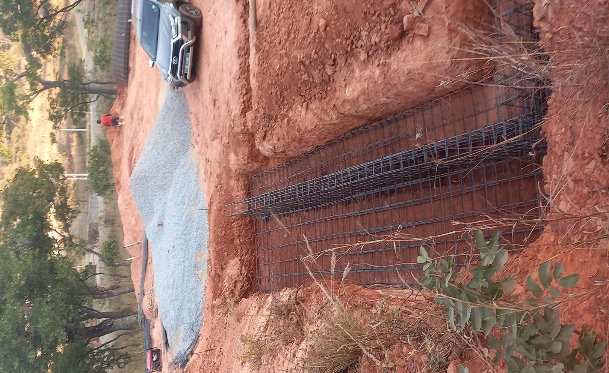

Keep the project on course.
Project management, site supervision, material procurement & control and quotation sourcing are part of the service structure.

Construction-stage imagery from the company profile.
Coordinate the moving parts.
The profile's methodology includes contractor monitoring, construction documentation schedules, progress payment certificates, quality control and closeout activities.
Monitor performance against the approved construction programme and projected cash flow.
Coordinate documentation and maintain reports through the project lifecycle.
Monitor labour, materials and machines to support optimum project performance.
Support compliance monitoring and monthly OHS audits described in the profile.
Control, communicate, close out.
A disciplined site process links design intent, construction progress, quality and documentation.
Material control
Procurement and control on site, with sourcing of quotations where required.
Quality control
Quality management systems, communication channels and documentation management.
Closeout
Completion certification, as-built drawings and closeout reporting.